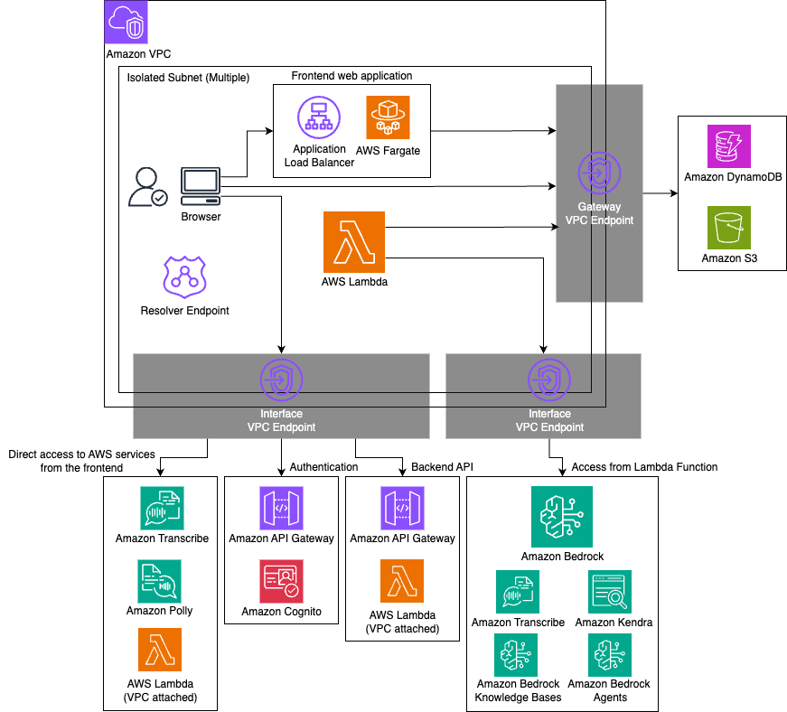

閉域モード¶
closedNetworkMode というオプションを true にすることで、クライアントから GenU への通信を閉域ネットワークで行うことができます。
また、GenU のメインのコンピューティングリソースである AWS Lambda と他の AWS サービス (Amazon DynamoDB や Amazon S3、Amazon Bedrock など) 間の通信も VPC 内で完結します。アーキテクチャ上の変更点は以下です。
- Amazon CloudFront は利用せず、Web の静的ファイルは Application Load Balancer と ECS Fargate でサーブします。
- Amazon Cognito へは Amazon API Gateway を経由してアクセスします。
- Lambda 関数から他サービスへの通信は VPC Endpoint 経由で行います。
閉域モードに関するオプションは closedNetwork プレフィックスがついています。以下がオプション一覧です。
| パラメータ | 説明 |
|---|---|
| closedNetworkMode | 閉域モードにするかどうか。true だと閉域モード。デフォルトは false。 |
| closedNetworkVpcIpv4Cidr | VPC を新規作成する場合に指定する IPv4 の CIDR。デフォルトでは 10.0.0.0/16。 |
| closedNetworkVpcId | VPC をインポートする場合の VPC ID。こちらを指定しないと VPC は新規作成になる。 |
| closedNetworkSubnetIds | GenU 関連のリソースをデプロイする Subnet の ID を複数指定。ALB、Fargate タスク、VPC Endpoint、Resolver Endpoint が作成される。こちらは指定しないと Isolated な Subnet が選択される。2 つ以上の Subnet ID を配列で指定する。 |
| closedNetworkCertificateArn | GenU にドメインを付与する場合に指定する ACM の ARN。ACM は手動で生成する。指定しない場合、GenU は Application Load Balancer のデフォルトのエンドポイントで公開される。 |
| closedNetworkDomainName | GenU のドメイン名。Private Hosted Zone は CDK が生成するため、手動作成不要。closedNetworkCertificateArn と closedNetworkDomainName は両方指定するか、両方指定しないかのどちらかである必要あり。 |
| closedNetworkCreateTestEnvironment | 検証環境を作成するかどうか。デフォルトで作成する。必要ない場合は false を指定する。検証環境は EC2 の Windows インスタンスとして作成し、Fleet Manager 経由でアクセスする。(詳細な手順は後述。) |
| closedNetworkCreateResolverEndpoint | Route53 の Resolver Endpoint を生成するかどうか。デフォルトで true。 |
アーキテクチャ¶

現状の制約¶
- デプロイはインターネットに疎通可能な環境で行う必要があります。また、動作検証環境にはマネージメントコンソールからアクセスするため、その場合もインターネット疎通が必要になります。
- デプロイには、通常モードのデプロイと同様の環境が必要です。具体的には、AWS IAM ユーザーの設定、Node.js、Docker が必要です。
- GenU がデプロイされるリージョンとモデルのリージョンは同一である必要があります。GenU を ap-northeast-1 にデプロイし、us-east-1 のモデルを利用するといったことは現状できません。
- 様々なリソースを作成するため、既存の VPC をインポートする場合は可能な限り clean な環境を利用することを推奨します。
- SAML 連携は利用できません。
- Voice Chat のユースケースは現状利用できません。
- AgentCore Chat のユースケースは現状利用できません。
有効な設定ファイルの例¶
有効な parameter.ts の例を示します。cdk.json をご利用の場合は、適宜読み替えてください。
const envs: Record<string, Partial<StackInput>> = {
// priv という環境名でデプロイする (任意の環境名で良い)
priv: {
region: 'ap-northeast-1',
modelRegion: 'ap-northeast-1',
modelIds: ['apac.anthropic.claude-sonnet-4-20250514-v1:0'],
imageGenerationModelIds: ['amazon.nova-canvas-v1:0'],
videoGenerationModelIds: ['amazon.nova-reel-v1:0'],
// Voice Chat は利用不可
speechToSpeechModelIds: [],
// 任意のオプション
ragEnabled: true,
ragKnowledgeBaseEnabled: true,
agentEnabled: true,
mcpEnabled: true,
guardrailEnabled: true,
useCaseBuilderEnabled: true,
// 以下は閉域のオプション
closedNetworkMode: true,
// ドメインを設定しない場合は以下の 2 つは不要
closedNetworkDomainName: 'genu.closed',
closedNetworkCertificateArn:
'arn:aws:acm:ap-northeast-1:111111111111:certificate/aaaaaaaa-bbbb-cccc-dddd-eeeeeeeeeeee',
// 既存の VPC を Subnet を指定する場合 (新規作成する場合は以下の 2 つは不要)
closedNetworkVpcId: 'vpc-00000000000000000',
closedNetworkSubnetIds: [
'subnet-11111111111111111',
'subnet-22222222222222222',
],
},
};
デプロイ方法¶
closedNetwork... オプションを設定した上で README.md に記載されている通常の手順でデプロイしてください。ClosedNetworkStack\<環境名> というスタックが追加でデプロイされます。(便宜上、これ以降は \<環境名> を省略します。)
GenU にアクセスするための URL は ClosedNetworkStack の WebUrl に出力されます。GenerativeAiUseCasesStack の WebUrl ではないことに注意してください。
また、GenerativeAiUseCasesStack のデプロイが完了するまでは GenU にアクセスできません。
検証方法¶
closedNetworkCreateTestEnvironment を true にしてデプロイした場合の検証方法について説明いたします。マネージメントコンソール経由で Windows の EC2 インスタンスにアクセスします。
手順1. EC2 Key Pair の Private Key の取得¶
Windows インスタンスに RDP で接続するために EC2 に設定した Key Pair の private key を取得します。private pey を取得するためのコマンドは WindowsRdpGetSSMKeyCommand... で始まる ClosedNetworkStack の出力に表示されています。
以下のようなものです。
aws ssm get-parameter --name /ec2/keypair/key-aaaaaaaaaaaaaaaaa --region ap-northeast-1 --with-decryption --query Parameter.Value --output text
こちらのコマンドを実行した結果をコピーしてください。
手順2. Windows インスタンスに接続¶
- マネージメントコンソールを開き、EC2 を開きます。
- ClosedNetworkStack... から始める名前のインスタンスにチェックを入れ、右上の「Connect」をクリックします。
- タブで RDP client を選択し、Connect using Fleet manager を選択して Fleet Manager Remote Desktop をクリックします。
- Authentication type は Key pair を選択し、Key pair content を Paste key pair content を選択して手順 1 で取得した private key を貼り付けます。
- Connect をクリックします。
手順3. GenU にアクセス¶
Windows 内で Edge ブラウザを開き、ClosedNetworkStack の WebUrl 出力に表示される URL を入力して GenU にアクセスします。 初回アクセス時は SignUp が必要です。
検証インスタンスについて¶
検証インスタンスは自動停止しないため、検証が完了したら EC2 を開いて対象インスタンスを手動で停止してください。 また、検証環境そのものが不要であれば、closedNetworkCreateTestEnvironment を false にしてデプロイし直すことで、削除可能です。
閉域 GenU に独自のドメインを設定する¶
証明書の取得¶
設定するドメインの証明書を発行し、AWS Certificate Manager にインポートしてください。 作成した Certificate の ARN を closedNetworkCertificateArn に指定し、ドメインを closedNetworkDomainName に指定します。
以下の手順は 検証目的のために 自己証明書を発行する手順ですが、こちらは本番利用しないでください。アクセス時にはブラウザが警告を表示します。
openssl コマンドを利用します。
# 鍵を生成します。
openssl genrsa 2048 > ssl.key
# Common Name には利用するドメインを指定してください
openssl req -new -key ssl.key > ssl.csr
# 10 年有効で発行します
openssl x509 -days 3650 -req -signkey ssl.key < ssl.csr > ssl.crt
Certificate body には ssl.crt の中身、Certificate private key には ssl.key の中身を貼り付けて Import certificate ボタンをクリックしてください。
オンプレから接続する場合の DNS サーバーの設定について¶
ここでは 2 つの前提を置きます。
- オンプレから AWS に接続するルートはすでに確立している。(ClosedNetworkStack で作成した or にインポートした VPC の IP アドレスを指定すれば、その先のリソースにたどり着ける状態のことです。)
- Route53 の Resolver Endpoint は作成済み。(Resolver Endpoint は closedNetworkCreateResolverEndpoint を true にしてデプロイすることで作成されます。このパラメータはデフォルトで true です。)
クライアントから名前解決が必要なエンドポイントは以下の通りです。<> で囲まれた箇所は実際の値に置き換えが必要です。
| サービス名 | 役割 | エンドポイント | エンドポイントの確認方法 |
|---|---|---|---|
| Application Load Balancer | Web 静的ファイルのサーバー | 独自ドメイン or internal-\ |
ClosedNetworkStack の出力の WebUrl で確認 |
| API Gateway | メインの API | \ |
GenerativeAiUseCasesStack の出力の ApiEndpoint で確認 |
| API Gateway | Cognito User Pool の proxy | \ |
ClosedNetworkStack の出力の CognitoPrivateProxyCognitoUserPoolProxyApiEndpoint... で確認 |
| API Gateway | Cognito Identity Pool の proxy | \ |
ClosedNetworkStack の出力の CognitoPrivateProxyCognitoIdPoolProxyApiEndpoint... で確認 |
| AWS Lambda | ストリーミング出力 | lambda.\ |
エンドポイントは固定 |
| Amazon Transcribe | 文字起こし | transcribe.\ |
エンドポイントは固定 |
| Amazon Transcribe Streaming | リアルタイム文字起こし | transcribestreaming.\ |
エンドポイントは固定 |
| Amazon Polly | 文字の読み上げ | polly.\ |
エンドポイントは固定 |
上の表のすべてのエンドポイントのリゾルバー (フォワーダー) として Resolver Endpoint の IP アドレスを指定するように DNS サーバーの設定を変更してください。 Resolver Endpoint の IP アドレスは、Route53 を開き、Inbound endpoints を選択して、作成したエンドポイントをクリックすることで確認できます。 なお、「Application Load Balancer に独自のドメインを設定している場合」を除き、すべてのエンドポイントは amazonaws.com ドメインです。そのため、amazonaws.com のリゾルバーとして Resolver Endpoint の IP アドレスを指定する方法が最も簡略的な設定です。ただし、この設定は対象範囲が広く、副作用が大きいため、各エンドポイントの FQDN で設定をいれることを強く推奨いたします。
動作確認のために、手元の端末に DNS サーバーとして Resolver Endpoint の IP を設定することもできます。ただし、この場合も副作用の懸念から、動作検証後には設定を戻すことを強く推奨いたします。
/etc/hosts を設定して動作検証する場合¶
端末の /etc/hosts に設定する場合は Resolver Endpoint ではなくそれぞれのエンドポイントの IP アドレスが必要になります。 ただし、それらの IP アドレスは変更される可能性があり、かつ単一の IP アドレスしか指定できず冗長性もないため、あくまで動作検証にのみ利用してください。 設定が必要なエンドポイントと IP アドレスの確認方法を以下にまとめます。
| サービス名 | 役割 | エンドポイント | IP アドレスの確認方法 |
|---|---|---|---|
| Application Load Balancer | Web 静的ファイルのサーバー | 独自ドメイン or internal-\ |
方法1 |
| API Gateway | メインの API | \ |
方法2 |
| API Gateway | Cognito User Pool の proxy | \ |
方法2 |
| API Gateway | Cognito Identity Pool の proxy | \ |
方法2 |
| AWS Lambda | ストリーミング出力 | lambda.\ |
方法2 |
| Amazon Transcribe | 文字起こし | transcribe.\ |
方法2 |
| Amazon Transcribe Streaming | リアルタイム文字起こし | transcribestreaming.\ |
方法2 |
| Amazon Polly | 文字の読み上げ | polly.\ |
方法2 |
- 方法1: EC2 の Network Interfaces を開き、「elb」と検索してください。Security group names が ClosedNetworkStack... となっているものが対象の ENI です。Network interface ID をクリックすると Private IPv4 address が確認できます。複数あるため、そのうち 1 つを選択してください。
- 方法2: VPC の Endpoints を開き、該当するサービス名を探してください。サービス名はエンドポイントを反転させたものです。(ただし API Gateway は ID を省略したものです。) VPC endpoint ID をクリックすると、ページ下部にデプロイされた Subnet と IP アドレスが表示されています。複数あるため、そのうち 1 つを選択してください。